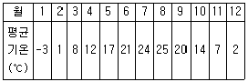
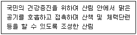
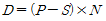
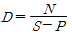
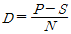
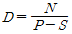
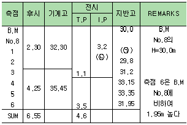
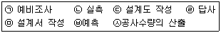
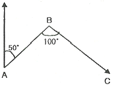
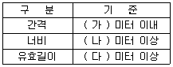

산림기사 (2016-03-06 기출문제)
1과목: 조림학
1. 활엽수 가지치기 방법으로 옳지 않은 것은?
- 원칙적으로 직경 5cm 이상의 가지는 자르지 않는다.
- 참나무류와 사시나무류는 으뜸가지 이하의 가지만 잘라준다.
- 단풍나무, 벚나무는 상처 유합이 잘 안되므로 자연낙지를 유도한다.
- 절단면이 줄기와 평행하도록 가지를 제거하여 지융부가 상하지 않게 한다.
(정답률: 66%)

2. 환원법에 의한 종자활력검사 방법에 대한 설명으로 옳지 않은 것은?
- 단기간 내에 실시할 수 있다.
- 휴면 종자에는 적용이 어렵다.
- 테트라졸륨 대신 테룰루산칼륨도 사용된다.
- 침엽수의 종자는 배와 배유가 함께 염색되도록 한다.
(정답률: 84%)
3. 순림과 비교하여 혼효림의 장점으로 옳지 않은 것은?
- 생물의 다양성이 높다.
- 환경적 기능이 우수하다.
- 병해충에 대한 저항력이 크다.
- 무육작업과 산림경영이 경제적이다.
(정답률: 89%)
4. 광색소인 파이토크롬(Phytochrome)에 대한 설명으로 옳은 것은?
- 분자량이 120 Dalton이다.
- 높은 광도에서만 반응한다.
- 생장점 부근에 가장 적게 나타난다.
- 암흑 속에서 기른 식물체에서 많이 검출된다.
(정답률: 73%)
5. 월평균기온이 다음과 같은 지역의 한랭지수는?

- -15
- -9
- -3
- 0
(정답률: 69%)
6. 알카리성 토양에서 잘 자라는 수종은?
- Acer palmatum
- Thuja orientalis
- Pinus Koraiensis
- Quercus variabilis
(정답률: 44%)
7. 참나무류 임분을 왜림작업으로 갱신하려 할 때 벌채시기로 가장 적절한 것은?
- 늦겨울 ∼ 초봄
- 늦봄 ∼ 초여름
- 늦여름 ∼ 초가을
- 늦가을 ∼ 초겨울
(정답률: 76%)
8. 묘포지 선정 조건으로 가장 적절한 것은?
- 평탄한 점토질 토양
- 5도 이하의 완경사지
- 한랭한 지역에서는 북향
- 남향에 방풍림이 있는 곳
(정답률: 82%)
9. 풀베기 시행 시 전면깎기를 실시하는 수종은?
- 전나무
- 삼나무
- 비자나무
- 가문비나무
(정답률: 60%)
10. 임목생장과 식재밀도에 대한 설명으로 옳지 않은 것은?
- 밀도가 높을수록 완만재가 된다.
- 밀도는 수고생장에 큰 영향을 끼친다.
- 밀도가 낮을수록 직경생장이 좋아진다.
- 밀도가 높을수록 간재적의 비율이 높아진다.
(정답률: 67%)
11. 중림작업에 대한 설명으로 옳은 것은?
- 산벌작업에서 중간에 벌채하는 작업종이다.
- 모수작업에서 중간목을 벌채하는 작업을 말한다.
- 나무 높이가 크지도 작지도 않은 중경목을 생산하는 작업종이다.
- 상층임관은 교림, 하층임관은 왜림으로 구성하는 작업을 말한다.
(정답률: 84%)
12. 일본에서 도입하여 조림된 수종은?
- Pinus rigida
- Zelkova serrata
- Larix kaempferi
- Quercus acutissima
(정답률: 83%)
13. 활엽수에 대한 설명으로 옳은 것은?
- 활엽수 모두 떡잎식물이다.
- 밑씨가 노출되고 씨방이 없다.
- 잎맥이 그물모양으로 되어 있다.
- 목부는 주로 헛물관으로 되어 있다.
(정답률: 79%)
14. 목본 식물조직에 대한 기능의 설명으로 옳지 않은 것은?
- 사부조직 : 수분의 통로 및 지탱역할을 한다.
- 분비조직 : 점액, 고무질, 수지 등을 분비한다.
- 후막조직 : 세포벽이 두껍고 원형질이 없으며 지탱역할을 한다.
- 유조직 : 원형질을 가지고 살아 있으며 세포분열이 일어난다.
(정답률: 74%)
15. 토양의 수분 부족으로 인한 잎의 생리현상으로 옳지 않은 것은?
- 팽압 상승
- 기공 폐쇄
- 광합성 중단
- 단백질 합성 감소
(정답률: 74%)
16. 양성화를 갖는 수종으로 옳은 것은?
- 벚나무
- 오리나무
- 은행나무
- 상수리나무
(정답률: 61%)
17. 1000개의 종자의 실중이 500g이고 용적중이 600g일 때 2L의 종자립수는?
- 600립
- 1000립
- 1200립
- 2400립
(정답률: 57%)
18. 솎아베기(간벌)에 대한 설명으로 옳은 것은?
- 도태간벌은 하층간벌에 속한다.
- Hawley가 제시한 택벌식 간벌에서는 주로 우세목을 간벌한다.
- 일본잎갈나무의 최초 간벌 적기는 조림 후 25 ∼30년이 경과한 이후이다.
- 지위가 나쁜 곳에서는 지위가 좋은 지역에 비해 빨리 간벌을 하는 것이 좋다.
(정답률: 57%)
19. 산림토양의 물리적 성질을 나타내는 인자가 아닌 것은?
- 토양입자
- 토양공극
- 토양산도
- 토양진비중
(정답률: 80%)
20. 묘목을 산지에 이식할 때 단근을 실시하는 이유로 옳은 것은?
- 산지이식 후 묘목 활착률을 높을 수 있다.
- 묘목 출하시 운반 중량을 줄이기 위함이다.
- 증산량과 광합성량을 높이기 위해 실시한다.
- 직근 발달을 촉진하고 세근 발달은 억제시킨다.
(정답률: 81%)
2과목: 산림보호학
21. 소나무류의 푸사리움(Fusarium) 가지마름병에 대한 설명으로 옳지 않은 것은?
- 불완전균류에 의한 수병이다.
- 피해가지는 송진이 흐르며 고사한다.
- 병원균은 잎의 기공을 통하여 침입한다.
- 묘목으로부터 대경목까지 모든 크기의 나무가 피해를 받는다.
(정답률: 55%)
22. 밤나무 흰가루병의 제1차 전염원이 되는 것은?
- 자낭포자
- 겨울포자
- 여름포자
- 유주포자
(정답률: 71%)
23. 다배생식하는 해충은?
- 솔나방
- 송충알좀벌
- 밤나무혹벌
- 솔잎혹파리
(정답률: 45%)
24. 밤나무 줄기마름병에 대한 설명으로 옳은 것은?
- 중간기주는 뱀고사리이다.
- 미국에서 유입된 병해이다.
- 질소비료를 적게 주어 방제한다.
- 병든 부위에 흰색의 포자각이 표피를 뚫고 나온다.
(정답률: 64%)
25. 중간기주와 기주교대를 하지 않는 병원균은?
- 소나무 혹병균
- 잣나무 털녹병균
- 오리나무 잎녹병균
- 느티나무 흰무늬병균
(정답률: 61%)
26. 느티나무벼룩바구미에 대한 설명으로 옳지 않은 것은?
- 1년에 1회 발생한다.
- 수피에서 성충으로 월동한다.
- 유충은 주로 잎살을 가해한다.
- 성충은 주로 수피를 가해한다.
(정답률: 34%)
27. 임지 내의 모닥불자리 또는 산불이 났던 곳에 주로 발생하는 수목병은?
- 뿌리혹선충병
- 근주심재부후명
- 자주빛날개무늬병
- 리지나뿌리썩음병
(정답률: 88%)
28. 수목의 뿌리혹병 발생 원인이 아닌 것은?
- 알칼리성 토양
- 고온다습한 조건
- 진딧물에 의한 감염
- 상처에 의한 병균 침입
(정답률: 66%)
29. 솔잎혹파리에 의한 피해를 줄이기 위한 방법으로 옳지 않은 것은?
- 시마진 수화제를 살포한다.
- 피압목을 제거하고 간벌을 실시한다.
- 아세타미프리드 액제를 성충발생기 수간주사한다.
- 솔잎혹파리먹좀벌 등 기생성 천적을 이용한다.
(정답률: 56%)
30. 대기오염물질 중 식물 체내에서 산화적 장해를 유발시키는 것이 아닌 것은?
- 오존
- 염소
- 이산화질소
- 아황산가스
(정답률: 40%)
31. 해충의 약제 저항성에 관한 설명으로 옳지 않은 것은?
- 약제에 대한 도태 및 생존의 결과이다.
- 약제 저항성이 해충의 다음 세대로 유전되지는 않는다.
- 해충의 개체군 내에서는 약제 저항성의 차이가 있는 개체가 존재한다.
- 동일 살충제에서 해충을 누대 도태시킨 경우 다른 살충제에도 저항성이 발달하는 현상은 교차저항성이라 한다.
(정답률: 84%)
32. 식물에 기생하는 대부분의 세균 형태는?
- 구형(coccus)
- 간상(bacillus)
- 나선상(spirillum)
- 부정형(pleomorphic)
(정답률: 71%)
33. 1년에 2∼3회 발생하며, 2화기 성충은 7월 중순∼8월 상순에 우화하여 주로 밤나무 종실에 1∼2개씩 산란하는 해충은?
- 밤바구미
- 밤나무혹벌
- 복숭아명나방
- 참나무재주나방
(정답률: 65%)
34. 성충이 흡즙성 해충인 것은?
- 솔껍질깍지벌레
- 호두나무잎벌레
- 도토리거위벌레
- 오리나무잎벌레
(정답률: 73%)
35. 외국에서 유입된 해충이 아닌 것은?
- 흰개미
- 매미나방
- 솔잎혹파리
- 버즘나무방패벌레
(정답률: 63%)
36. 잣송이를 가해하여 수확을 감소시키는 해충으로 구과 속 가해부위에 배설물을 채워놓고 외부로 배설물을 배출하여 구과표면에 붙여 놓으며 신초에도 피해를 주는 해충은?
- 솔박각시
- 솔알락명나방
- 솔수염하늘소
- 잣나무넓적잎벌
(정답률: 69%)
37. 모잘록병원균 중에서 불완전균류는?
- Pythium irregulare
- Rhizoctonia solani
- Pythium debaryanum
- Phytophthora cactorum
(정답률: 70%)
38. 성비(sex ratio)가 0.65인 곤충이 있다. 암·수 전체 개체수가 100마리 일 때 그 중 수컷은 몇 마리인가?
- 35마리
- 50마리
- 65마리
- 100마리
(정답률: 73%)
39. 저온에 의한 수목의 피해에 대한 설명으로 옳지 않은 것은?
- 세포 내에 얼음결정이 형성되어 세포막이 파손된다.
- 빙점 이하의 온도에서 나타나는 식물의 피해를 말한다.
- 추위로 인한 토양 중 산소가 부족하여 뿌리의 호흡장애가 일어난다.
- 온도가 서서히 내려가서 얼음결정이 세포 밖에 생기더라도 원형질이 탈수상태에서 견디지 못할 경우 발생한다.
(정답률: 59%)
40. 표징으로 나타나는 병원체의 기관 중에 번식기관인 것은?
- 균핵
- 발아관
- 부착기
- 분생자병
(정답률: 58%)
3과목: 임업경영학
41. 임업조수익 중에서 임업소득이 차지하는 비율은?
- 임업의존율
- 임업소득율
- 임업순수익율
- 임업소득가계충족율
(정답률: 67%)
42. 임목 직경을 수고의 1/n 되는 곳의 직경과 같게 하여 정한 형수는?
- 정형수
- 수고형수
- 절대형수
- 흉고형수
(정답률: 75%)
43. 임목의 연년생장률에 대한 설명으로 옳은 것은?
- 총생장량을 면적으로 나눈 백분율
- 정기생장량을 그 기간의 년수로 나눈 백분율
- 총생장량을 벌기까지의 총년수로 나눈 백분율
- 1년간의 생장량을 당초의 재적으로 나눈 백분율
(정답률: 73%)
44. 산림면적이 300ha, 벌기평균재적이 150m3, 1ha당 벌기재적이 200m3일 경우 개위면적은?
- 200ha
- 300ha
- 400ha
- 500ha
(정답률: 61%)
45. 임업투자 사업에서 감응도 분석의 대상으로 고려하여야 할 주요 요인이 아닌 것은?
- 생산량
- 자본예산
- 사업기간의 지연
- 생산물의 가격 및 노임 등의 가격 요인
(정답률: 52%)
46. 산림평가에 쓰이는 용어 중 의미가 다른 것은?
- 환원율
- 할인율
- 전가계수
- 현재가계수
(정답률: 55%)
47. 산림문화휴양에 관한 법률에 정의된 사항으로 다음 설명에 해당하는 것은?

- 숲길
- 산림욕장
- 치유의 숲
- 자연휴양림
(정답률: 76%)
48. 금년에 간벌수입이 100만원의 순수입이 있어 이를 연이율10% 로 하여 2년 후의 후가를 계산하면 얼마인가?
- 110만원
- 121만원
- 133만원
- 146만원
(정답률: 81%)
49. 산림문화 휴양에 관한 법률에 의한 치유의 숲 시설 종류가 아닌 것은?
- 체육시설
- 안전시설
- 편익시설
- 위생시설
(정답률: 61%)
50. 법정림에 있어서 윤벌기가 50년인 경우, 법정년벌율(법정수확율)은?
- 1%
- 2%
- 3%
- 4%
(정답률: 73%)
51. 재적수확이 최대가 되는 벌기령은?
- 화폐수익이 최대인 때
- 토지순수익이 최대인 때
- 벌기평균생장량이 최대인 때
- 벌기평균생장률이 최대인 때
(정답률: 78%)
52. 임지의 특성에 해당하지 않는 것은?
- 임업 이외의 다른 사업이 어려운 편이다.
- 임지는 넓고 험하여 집약적인 작업이 어렵다.
- 교통의 편리성에 따라 임지의 경제적 가치는 결정된다.
- 수직적으로 생육환경이 다르지만 비교적 수종분포가 균일하다.
(정답률: 64%)
53. 컴퓨터의 발전과 더불어 산림경영계획 분야 및 산림의 다목적 이용계획에 적용하는 분석기법으로 1차식인 수학모형을 이용하는 것은?
- 선형계획법
- 동적계획법
- 비선형계획법
- 그물망분석법
(정답률: 84%)
54. 임목의 평가방법을 짝지은 것으로 옳지 않은 것은?
- 원가방식 - 비용가법
- 수익방식 - 기망가법
- 비교방식 - 수익환원법
- 원가수익절충방식 - Glaser법
(정답률: 63%)
55. 흉고직경 20cm, 수고 10m인 입목의 재적이 약 0.14m3로 계산되었다. 재적계산에 적용된 형수는 약 얼마인가?
- 0.30
- 0.35
- 0.40
- 0.45
(정답률: 59%)
56. 임지기망가의 최대치에 도달하는 속도를 빠르게 하기 위한 조건으로 옳지 않은 것은?
- 이율이 높을수록
- 조림비가 많을수록
- 간벌수확이 많을수록
- 주벌수확의 증대속도가 빠를수록
(정답률: 73%)
57. 평균생장량과 연년생장량간의 관계를 옳게 설명한 것은?
- 초기에는 평균생장량이 연년생장량보다 크다.
- 평균생장량이 연년생장량에 비해 최대점에 빨리 도달한다.
- 평균생장량이 최대가 될 때 연년생장량과 평균생장량은 같게 된다.
- 평균생장량이 최대점에 이르기까지는 연년생장량이 평균생장량보다 항상 작다.
(정답률: 84%)
58. 산림교육의 활성에 관한 법률에 규정한 산림교육전문가의 배치기준 중 숲해설가를 배치하는 시설이 아닌 것은?
- 도시림
- 국민의 숲
- 자연휴양림
- 유아숲체험원
(정답률: 51%)
59. 국유림의 소반경영계획 수립 시 임목생산에 대한 설명으로 옳지 않은 것은?
- 수확조절은 축적 위주로 임목생산량을 선정하는 것을 지양한다.
- 벌기령은 임분의 평균생산기간을 의미하고 보속성 여부를 판단한다.
- 산림의 공간배치는 수확대상 임분을 선정하는데 중요한 의미를 갖는다.
- 정해진 벌기령의 범위 안에서 매 임분급단위로 대략 영급구성면적이 같아지도록 한다.
(정답률: 55%)
60. 임업기계의 감가상각비(D)를 구하는 공식으로 옳은 것은?(단, P : 기계구입가격, S : 기계 폐기시의 잔존가치, N : 기계의 수명)




(정답률: 80%)
4과목: 임도공학
61. 측선 길이 100m, 위거 오차 0.1m, 경거 오차 0.5m, 전측선 총길이가 200m라 하면 경거와 위거의 조정량을 컴퍼스법칙에 의해 계산한 값은?
- 위거 조정량 : 0.01m, 경거 조정량 : 0.⑤m
- 위거 조정량 : 0.25m, 경거 조정량 : 0.⑤m
- 위거 조정량 : 0.⑤m, 경거 조정량 : 0.25m
- 위거 조정량 : 0.50m, 경거 조정량 : 0.25m
(정답률: 55%)
62. 다음은 기고식에 의한 종단측량 야장이다. 괄호 안에 들어갈 수치로 옳은 것은?

- ㉠ 29.1, ㉡ 0.7
- ㉠ 29.1, ㉡ 2.5
- ㉠ 35.5, ㉡ 0.7
- ㉠ 35.5, ㉡ 2.5
(정답률: 60%)
63. 임도공사시 기초작업에서 지반의 허용지지력이 가장 큰 것은?
- 연암
- 잔모래
- 연한점토
- 자갈과 거친 모래
(정답률: 71%)
64. 벌목 제근 작업에 가장 적합한 기계는?
- cable crane
- rake dozer
- tractor shovel
- ripper bulldozer
(정답률: 67%)
65. 토적계산법에서 실제의 토적보다 다소 적게 나오지만 양단면평균 계산법보다 오차가 적은 것은?
- 등고선법
- 각주공식
- 주상체공식
- 중앙단면적법
(정답률: 70%)
66. 지선임도 개설단가는 2000원/ha, 수확재적은 25m3/ha, 지선임도밀도가 30m/ha일 때 지선임도 가격은 얼마인가?
- 1667원/m3
- 2100원/m3
- 2400원/m3
- 3333원/m3
(정답률: 51%)
67. 지성선 중 동일 방향으로 경사져 있으나 기울기가 다른 두 면의 교차선은?
- 경사변환선
- 경사교차선
- 방향교차선
- 방향변환선
(정답률: 48%)
68. 롤러의 표면에 돌기를 만들어 부착한 것으로 점질토의 다짐에 적당하고 제방, 도로, 비행장, 댐 등 대규모의 두꺼운 성토의 다짐에 주로 사용되는 것은?
- 진동 롤러
- 탬핑 롤러
- 타이어 롤러
- 머캐덤 롤러
(정답률: 84%)
69. 낮은 산지의 고저차가 1m되는 두 점간 거리는 10m일 때의 경사보정량(cm)은?
- -1
- -2
- -5
- -10
(정답률: 38%)
70. 사리도의 유지보수에 대한 설명으로 옳지 않은 것은?
- 방진처리를 위하여 물, 염화칼슘 등이 사용된다.
- 횡단기울기를 10∼15% 정도로 하여 노면배수가 양호하도록 한다.
- 노면의 정지작업은 가급적 비가 온 후 습윤한 상태에서 실시하는 것이 좋다.
- 길어깨가 높아져 배수가 불량할 경우 그레이더로 정형하고 롤러로 다진다.
(정답률: 66%)
71. 임도의 구조물 시공시 기초공사의 종류가 아닌 것은?
- 전면기초
- 말뚝기초
- 고정기초
- 깊은기초
(정답률: 61%)
72. 임도설계업무 요소를 순서에 맞게 나열한 것은?

- ㉣→㉥→㉠→㉡→㉤→㉢→㉦
- ㉣→㉠→㉥→㉡→㉢→㉦→㉤
- ㉠→㉣→㉥→㉡→㉤→㉢→㉦
- ㉠→㉣→㉥→㉡→㉢→㉦→㉤
(정답률: 72%)
73. 임도의 노체와 노면에 대한 설명으로 옳지 않은 것은?
- 사리도는 노면을 자갈로 깔아 놓은 임도이다.
- 토사도는 배수문제가 적어 가장 많이 사용된다.
- 임도는 노상, 노면, 기층, 표층으로 구성되는 것이 일반적이다.
- 노상은 다른 층에 비해 작은 응력을 받으므로 특별히 부적당한 재료가 아니면 현장 재료를 사용한다.
(정답률: 62%)
74. 다음 그림에서 측선 BC의 방위각은 몇 도인가?

- 50°
- 100°
- 130°
- 150°
(정답률: 67%)
75. 대피소의 설치기준으로 다음 () 안에 들어갈 내용이 옳은 것은?

- 가 : 300, 나 : 5, 다 : 15
- 가 : 300, 나 : 15, 다 : 5
- 가 : 500, 나 : 5, 다 : 15
- 가 : 500, 나 : 15, 다 : 5
(정답률: 75%)
76. 토양을 덤프트럭으로 운반하고자 한다. 덤프트럭 적재 용량이 500m3이라면 산악지의 자연상태의 토량(m3)이 얼마일 때 가득 적재할 수 있는가? (단,토양의 변화율 L은 1.2, C는 0.9 이다. )
- 420
- 450
- 560
- 600
(정답률: 38%)
77. 임도의 종단 기울기에 대한 설명으로 옳은 것은?
- 종단기울기를 급하게 하면 임도우회율을 낮출 수 있다.
- 종단기울기의 계획은 설계차량의 규격과 관계가 없다.
- 종단기울기는 완만한 것이 좋기 때문에 0%를 유지하는 것이 좋다.
- 종단기울기는 시공 후 임도의 개·보수를 통하여 손쉽게 변경할 수 있다.
(정답률: 74%)
78. 임도의 시공시 연한 점질토 및 연한 점토인 경우에 성토의 높이를 5m 미만으로 설치할 때, 흙쌓기 비탈면의 표준 기울기는? (단, 기초지반의 지지력이 충분한 성토에 적용한다. )
- 1 : 1.0 ∼ 1 : 1.2
- 1 : 1.2 ∼ 1 : 1.5
- 1 : 1.5 ∼ 1 : 1.8
- 1 : 1.8 ∼ 1 : 2.0
(정답률: 36%)
79. 산림조사용 항공사진을 판독할 때 식재열이 뚜렷하며, 임분 전체의 색조가 균일하고 임분의 경계가 직선에 가까운 것은?
- 천연림
- 혼효림
- 복층림
- 인공림
(정답률: 82%)
80. 임도 횡단 측량시 측량해야 할 지점이 아닌 것은?
- 중심선의 각 지점
- 구조물 설치 지점
- 지형이 급변하는 지점
- 노선 연장 100m 마다의 지점
(정답률: 55%)
5과목: 사방공학
81. 비탈 옹벽공법을 구조에 따라 분류한 것이 아닌 것은?
- T형 옹벽
- 부벽식 옹벽
- 돌쌓기 옹벽
- 중력식 옹벽
(정답률: 68%)
82. 기슭막이의 시공목적에 대한 설명으로 옳지 않은 것은?
- 기슭의 유로 변경
- 계안 횡침식 방지
- 산복공작물의 기초 보호
- 산복붕괴의 직접적인 방지
(정답률: 55%)
83. 토사퇴적구역에 대한 설명 중 옳지 않은 것은?
- 유수의 유송력이 대부분 상실되는 지점이다.
- 침적지대 또는 사력퇴적지역 등으로 불린다.
- 황폐계류의 최하부로서 계상기울기가 급하고 계폭이 좁다.
- 유송토사의 대부분이 퇴적되어 계상이 높아지게 된다.
(정답률: 81%)
84. 단끊기 작업에 대한 설명으로 옳지 않은 것은?
- 일반적으로 하부에서 상부 방향으로 진행한다.
- 비탈면에 너비가 일정한 소단을 만드는 공사이다.
- 단상(段上)에는 될 수 있는 대로 원래의 표토를 존치하도록 한다.
- 주로 경사가 급한 비탈면에서 식생을 조기에 도입하기 위한 곳에 실시한다.
(정답률: 69%)
85. 비탈 녹화공법에 적용하기 가장 부적합한 것은?
- 조공
- 새심기
- 사초심기
- 씨뿌리기
(정답률: 72%)
86. 유역면적 1ha, 최대 시우량 100mm/hr 일 때 시우량법에 의한 계획지점에서의 최대홍수유량(m3/s)은? (단, 유거계수(K)는 0.7 로 한다)
- 0.166
- 0.194
- 1.17
- 1.94
(정답률: 75%)
87. 앞 모래언덕 육지 쪽에 후방 모래를 고정하여 표면을 안정시키고 식재목이 잘 생육할 수 있는 환경 조성을 위해 실시하는 공법은?
- 구정바자얽기
- 모래덮기공법
- 퇴사울타리공법
- 정사울세우기공법
(정답률: 79%)
88. Bazin 공식에 관한 설명으로 옳은 것은?
- 풍부한 경험에 의한 조도계수가 필요하다.
- 계수 산정이 복잡하고 물리적 의미도 명확하지 않다.
- 기울기가 급하고 유속이 빠른 수로에서 평균유속을 구하는 식이다.
- 물의 흐름이 등류상태에 있는 경우의 단면 평균유속을 구하는 식이다.
(정답률: 61%)
89. 앵커박기공법의 적용대상지로 가장 적합한 곳은?
- 비탈 보호나 완만한 경사로 성토를 할 곳
- 급경사의 대규모 암반비탈에 암석이 노출되어 녹화공사가 불가능한 곳
- 비탈의 암질이 복잡하고 마사토로 구성되어 취급이 곤란하고 지하수가 용출하는 곳
- 비탈 경사가 현저하게 급한 곳에서 토압이 큰 곳이나 비탈 틀 공법 혹은 흙막이공사 등을 계획하는 곳
(정답률: 47%)
90. 유출계수(C)가 0.9 이고 유역 면적이 100ha 인 험준한 산악지역에 시간당 100mm의 강도로 비가 내리고 있다면 합리식법으로 계산한 최대홍수량(m3/s)은?
- 2.5
- 25
- 250
- 2500
(정답률: 63%)
91. 사방댐의 물빼기 구멍설치 목적으로 옳지 않은 것은?
- 유출토사량 조절
- 댐의 시공 중 유수 저수
- 사력기초의 잠류속도 감소
- 댐의 시공 후 대수면에 가해지는 수압 감소
(정답률: 49%)
92. 빗물에 의한 침식에 대한 설명으로 옳지 않는 것은?
- 구곡침식은 도랑이 커지면서 심토까지 심하게 깎이는 현상이다.
- 우격침식은 자연계천이나 하천에 의해 발생되는 현상이다.
- 누구침식은 토양표면에 잔 도랑이 불규칙하게 생기면서 깎이는 현상이다.
- 면상침식은 침식의 초기 유형으로 토양의 얕은 층이 유실되는 현상이다.
(정답률: 76%)
93. 평떼붙이기공법의 설명으로 옳지 않은 것은?
- 평떼심기란 평탄지에 평떼를 심는 것이다.
- 주로 45도 이상의 급경사의 지형에 시공한다.
- 붙인 떼는 Ep 꽂이로 고정하여 활착이 잘 이뤄지게 한다.
- 심은 후에는 잘 밟아 다져 뗏밥을 주고 깨끗이 뒷정리를 한다.
(정답률: 71%)
94. 야계사방공사에서 계상기울기 결정에 이용되는 임계유속이란 무엇인가?
- 계상 바닥에서 발생하는 유속
- 계상침식을 일으키는 최대유속
- 수표면에서 발생하는 표면유속
- 계상에 침식을 일으키지 않는 최대유속
(정답률: 70%)
95. 다음 그림에 해당하는 돌쌓기 종류는?(문제 오류로 그림 파일이 없습니다. 정답은 1번입니다. 정확한 그림 내용을 가지고 계신 분께서는 관리자 메일로 보내주시면 감사하겠습니다.)
- 켜쌓기
- 막쌓기
- 골쌓기
- 육모쌓기
(정답률: 81%)
96. 임간나지에 대한 설명으로 옳은 것은?
- 산림이 회복되어 가는 임상이다.
- 비교적 키가 작은 울창한 숲이다.
- 초기황폐지나 황폐이행지로 될 위험성은 없다.
- 지표면에 지피식물 상태가 불량하고 누구 또는 구곡침식이 형성되어 있다.
(정답률: 79%)
97. 산림지대에서 증발산에 대한 설명으로 옳지 않은 것은?
- 증발산량 추정방법으로 존스웨이트식 등이 있다.
- 물수지법, 열수지법으로 증발산량을 파악할 수 있다.
- 증발되거나 방산되어 공중으로 되돌아가는 현상이다.
- 일반적으로 증발산량은 정오에 최소이고 자정에 최대이다.
(정답률: 82%)
98. 사방댐의 단면에 대한 안정을 계산할 때 작용하는 외력으로 옳지 않은 것은?
- 양압력
- 퇴사압력
- 제체의 중량
- 기초지반의 지지력
(정답률: 42%)
99. 경사가 완만하고 상수가 없으며 유량이 적고 토사의 유송이 없는 곳에 가장 적합한 산복수로는?
- 떼붙임 수로
- 메쌓기 돌수로
- 찰쌓기 돌수로
- 콘크리트 수로
(정답률: 75%)
100. 비탈면 힘줄박기공법에 관한 설명으로 옳지 않은 것은?
- 사각형틀, 삼각형틀, 계단상 수평띠 모양 등이 있다.
- 현장에서 직접 거푸집을 설치하여 콘크리트를 친다.
- 비탈기울기가 급하고 불안정한 사면에 시공한다.
- 비탈 제일 아래에는 수직방향으로 콘크리트 옹벽형 기초공사를 한다.
(정답률: 60%)